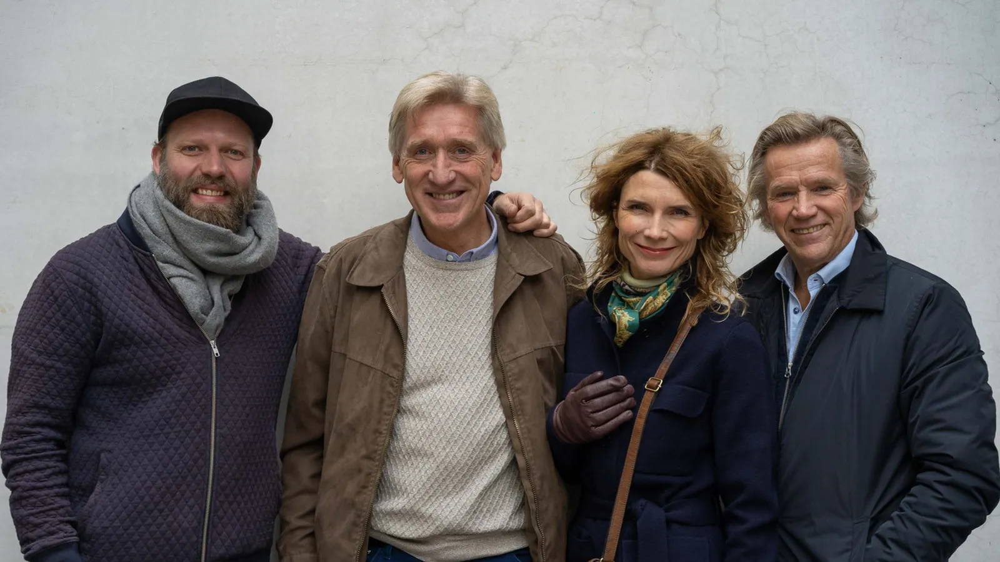

Produsent
Bokmessa i Frankfurt
«Handover ceremony» for Norge på bokmessa i Frankfurt, med Herborg Kråkevik, Mathias Eick og Kjetil Bjerkestrand.
Terje Brun-Pedersen var produsent for det kulturelle innslaget da Norge overtok som hovedland på verdens største bokmesse.